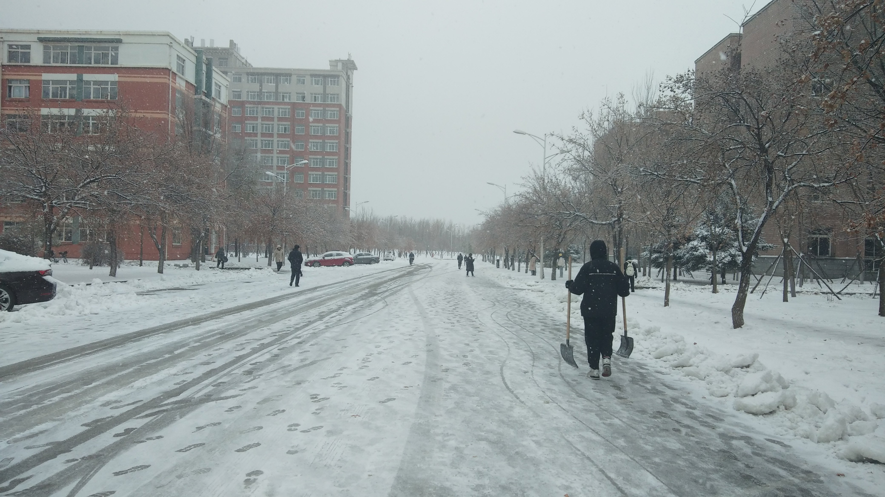
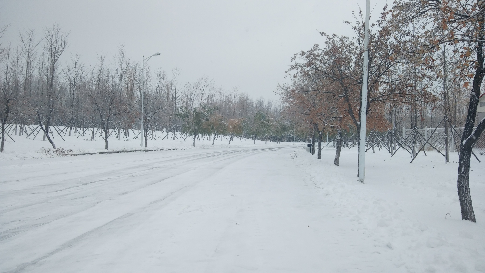
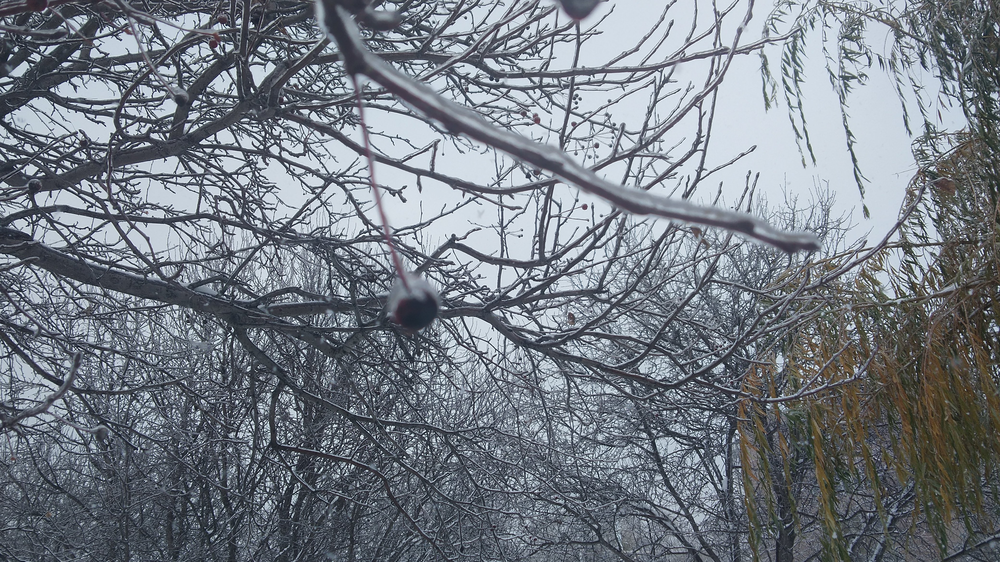
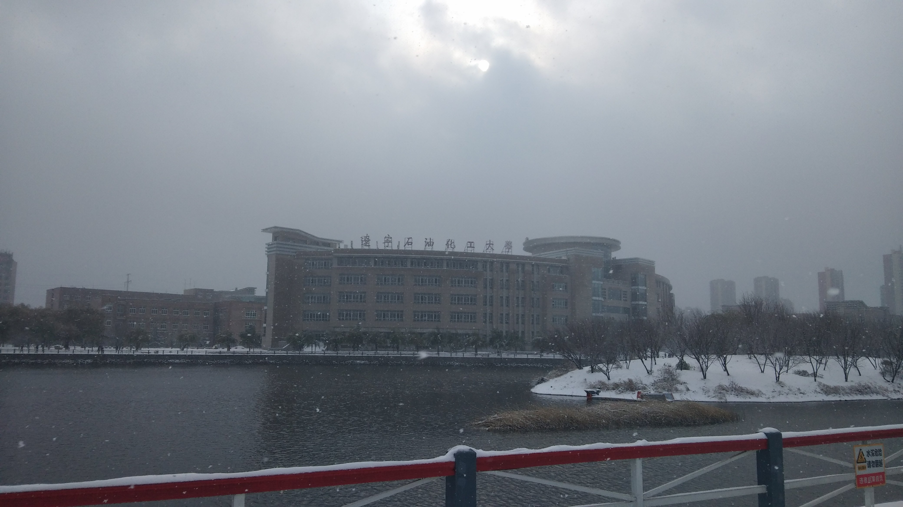
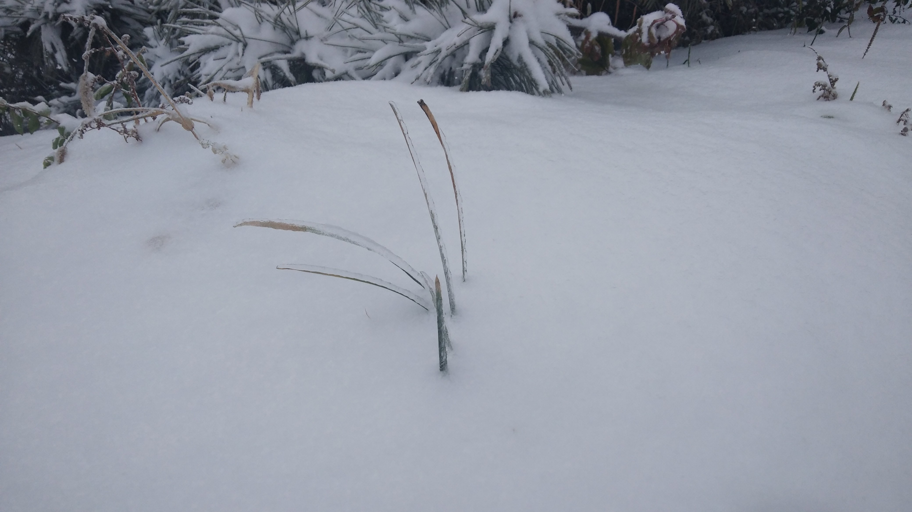
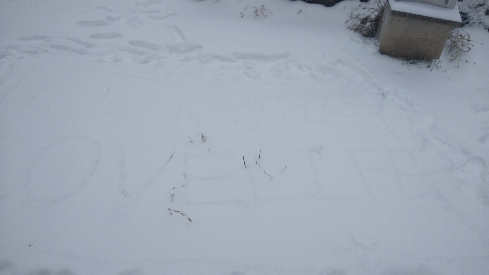

雪临有感
大一上学期写过雪临有感，现在是大四上学期，再写一篇，遥相呼应。
毕业之后，很难再见到学校的雪了。想到这里，不免有诸多感慨。大一时的自己，不知道自己即将面对什么，那种面对未知的恐惧，存在于那时的我的心里。就像今日的雪花，每一片都是我将面对的一件事，当它们扑面而来时，我吓极了。蜷缩在无人角落，独自思考解决的办法。
如今再看这篇旧文，感觉这像是另一个人写的（笑～），也像有些人那样，怀疑自己是否写过这篇文章。但它的确描绘的是我那时的心绪，这一点毋庸置疑。*人是不会停止改变的，只不过有些是主动选择的，有些是被迫的*。这几年来，我做过很多尝试，像是写作、阅读、运动、交友。写作，如你所见，现在还在写；阅读，前几年只是断续地在读，今年一改往常，我开始有选择地阅读一些书；运动，也是今年开始才更关注这方面，逐渐明白身体健康能让自己有更多可能性；交友，一直保持着少而精的做法，泛泛之交不如不交，知心话应该跟真朋友说。
走在雪地里，看到被雪覆盖的脚印，想到学习的过程。刚开始学习新知识的时候，印象很深刻（因为以前不了解），留下的脚印很深；随时间流逝，更多的新知识把旧有的知识覆盖，留下的脚印变浅；我要做的，就是沿着那些旧知识，以新知识的方法，再学习一遍。这时，自己对旧知识的印象会更加深刻。
走在雪中，四下无人，绝妙！
随雪而舞，忘我！
     